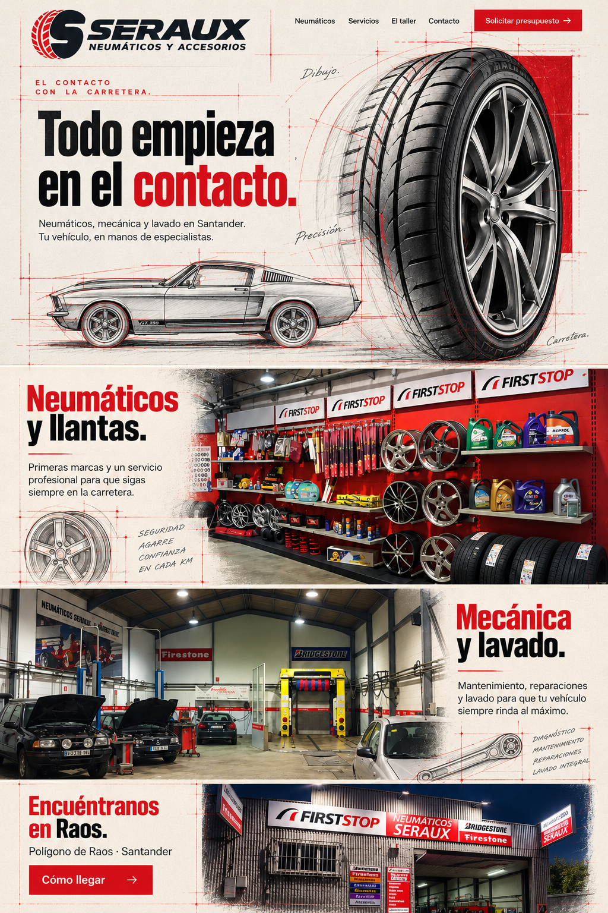

SERAUX · Kit corrigido V2
Hero do pneu preservado. Seções claras corrigidas conforme a imagem enviada.
Abrir estudo responsivo
LEIA-ME do kit
Guia atualizado
Composição desktop corrigida
Composição mobile corrigida
Roteiro corrigido
Vídeo do hero preservado
Logo transparente
Referência das seções enviada pelo usuário
